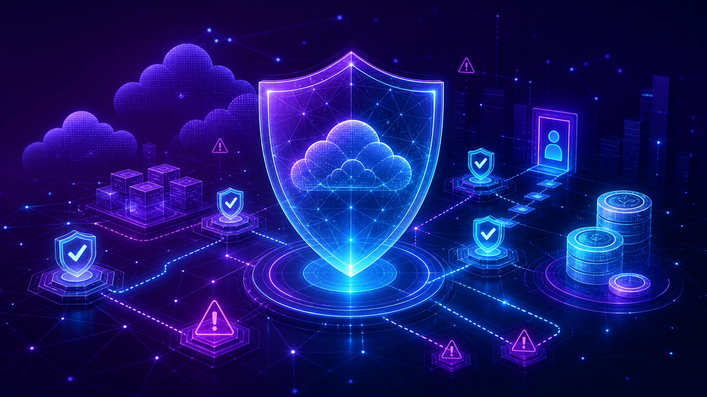

공식 블로그 출처
구글 클라우드 기술 업데이트 신호
신규성이 확인되지 않은 보조 출처입니다. 당일 업데이트 여부는 확인 필요이며, 본문에서는 보조 출처 근거로만 사용했습니다.
- 발행일
- 확인 필요
- 원문
- 공식 원문 확인
신규 및 최근 24시간 출처가 없어 최신 저장 문서를 보조 출처으로 사용했습니다. 당일 신규성은 확인 필요입니다.
확인한 공식 블로그는 6개이며, 분석 입력 문서는 6건입니다. 출처가 부족한 항목은 확인 필요로 표시했습니다.
이번 수집 데이터는 구글 클라우드 공식 블로그가 강조한 서비스·고객 사례·보안·데이터 관리 신호를 중심으로 해석해야 합니다.
기업 의사결정자는 새 기능 자체보다 기존 권한 체계, 데이터 위치, 비용, 책임 분장에 미치는 영향을 먼저 점검해야 합니다.
한국 기업은 규제 산업의 보안 심사, 개인정보·데이터 반출 제한, 다중 클라우드 운영 기준과 맞물려 적용 가능성을 검토해야 합니다.
신규성이 확인되지 않은 보조 출처입니다. 당일 업데이트 여부는 확인 필요이며, 본문에서는 보조 출처 근거로만 사용했습니다.
공식 블로그는 데이터베이스 운영 규모와 관리 자동화의 중요성을 보여줍니다. 기업은 성능, 비용, 권한, 백업 정책을 함께 확인해야 합니다.
공식 블로그는 보안 정보·이벤트 관리 영역에서 탐지, 대응, 통합 분석 역량이 경쟁 축으로 부각되고 있음을 보여줍니다.
공식 블로그는 보안 정보·이벤트 관리 영역에서 탐지, 대응, 통합 분석 역량이 경쟁 축으로 부각되고 있음을 보여줍니다.
공식 블로그는 그래프 기술이 고객·상품·행동 데이터를 연결해 의사결정 시스템의 맥락을 강화할 수 있음을 보여줍니다.
공식 블로그는 인공지능 기반 위협 대응에서 권한, 데이터 보호, 책임 있는 보안 운영 기준을 함께 검토해야 함을 시사합니다.

전략 메시지는 관찰된 사실, 공식 원문 근거, 기업 의사결정자의 리스크·기회·검토 포인트 순서로 판단하는 것이 안전합니다.
| 관찰 신호 | 관련 기술 | 의사결정 검토 포인트 |
|---|---|---|
| 구글 클라우드 기술 업데이트 신호 | 확인 필요 | 공식 문서 기준으로 지원 범위, 리전, 비용, 권한 모델, 데이터 보호 요건을 확인해야 합니다. |
| 데이터베이스 확장성과 데이터 모델 변화 신호 | Gemini, Cloud SQL, Agent, Kubernetes, GKE | 공식 문서 기준으로 지원 범위, 리전, 비용, 권한 모델, 데이터 보호 요건을 확인해야 합니다. |
| 보안 분석과 위협 대응 거버넌스 신호 | Gemini, Mandiant, VirusTotal, Google Security 운영, Agent, 에이전트 | 공식 문서 기준으로 지원 범위, 리전, 비용, 권한 모델, 데이터 보호 요건을 확인해야 합니다. |
| 보안 분석과 위협 대응 거버넌스 신호 | Gemini, Spanner, Agent, 에이전트, Kubernetes | 공식 문서 기준으로 지원 범위, 리전, 비용, 권한 모델, 데이터 보호 요건을 확인해야 합니다. |
| 데이터베이스 확장성과 데이터 모델 변화 신호 | Gemini, Gemini 엔터프라이즈, BigQuery, Spanner, AlloyDB, Google 데이터 Cloud 그래프 기술 | 공식 문서 기준으로 지원 범위, 리전, 비용, 권한 모델, 데이터 보호 요건을 확인해야 합니다. |
| 보안 분석과 위협 대응 거버넌스 신호 | Gemini, Mandiant, Google Cloud Security, Security Command Center, 인공지능 위협 방어 | 공식 문서 기준으로 지원 범위, 리전, 비용, 권한 모델, 데이터 보호 요건을 확인해야 합니다. |
Gemini, Cloud SQL, Agent, Kubernetes, GKE, Mandiant, VirusTotal, Google Security 운영, 에이전트, Spanner, Gemini 엔터프라이즈, BigQuery, AlloyDB, Google 데이터 Cloud 그래프 기술, Google Cloud Security, Security Command Center, 인공지능 위협 방어